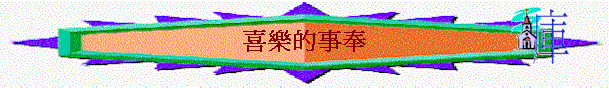

經文：太11：25-30；路10：17-21(查經方式)
引言：聖經題及「安息」「歡喜」，有沒有認識一些肢體他們在教會、在事奉中十分開心及“relax”？
1.人：來到主前（太11：28）
a.這節聖經同什麼人說的？「你們」是指誰？
b.事奉的人有什麼勞苦与重擔？ 有沒有試過“burnt out”？
c.聖經教我們怎做？ 是否任何人也可以？ 你有否這節的經歷？
2.心：柔和謙卑（v.29）
a.聖經題及「柔和謙卑」，何謂柔和謙卑？
b.一個人若沒有柔和謙卑，他在事奉中會有什麼不開心表現？
c.如何可以柔和謙卑？ 有沒有見過一些肢體他們有柔和謙卑的生命？
3.手：負主的軛（v.29）
a.是否單有柔和謙卑就有安息，還需要什麼？
b.何謂負主的軛？負主的軛的人有什麼表現？ 若不負主的軛，可負什麼軛？
c.負主的軛會否很沉重？ 何以見得？
d.在你事奉經歷中，最開心是那段時間？為什麼？
4.眼：看得更深（路10：17-21）
a.門徒為什麼歡喜？ 你若是他們，有類似經歷，你會有什麼反應？
b.耶穌又帶他們看什麼事？ 在你事奉中，你最渴望得的喜樂又是什麼？
c.耶穌又如何？他事奉在那時有沒有果效？為何歡喜？
d.最近在事奉中，有沒有看到神的美？
總結：事奉的人怎能安息與喜樂？
你在這此查經中，最大的得著又是什麼？